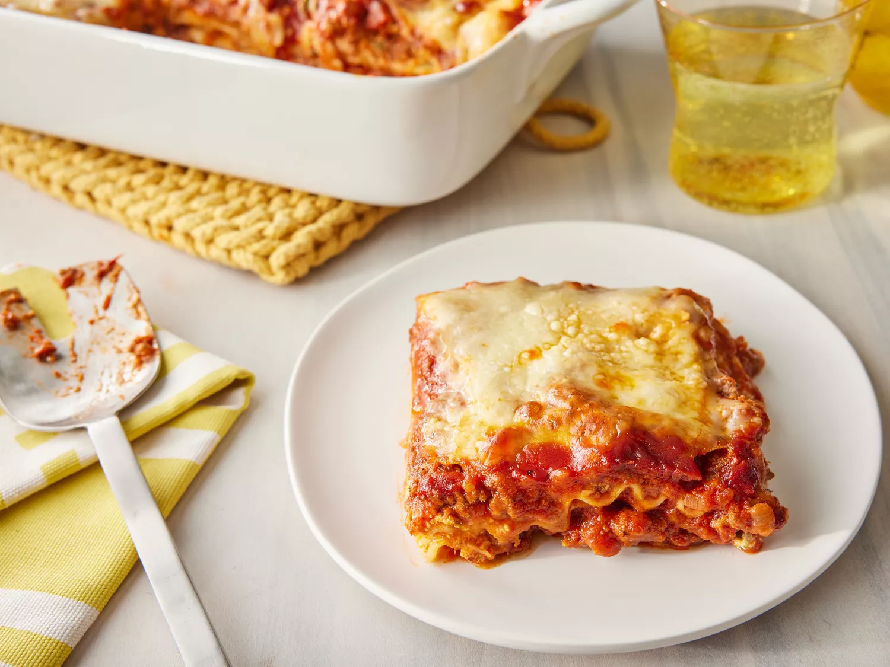

Home
Lasagna

Description
Lasagna is a classic Italian dish that consists of layers of pasta, meat, cheese, and sauce. It's a hearty and satisfying meal that is perfect for family gatherings or special occasions.
How to make Lasagna
Making lasagna can be time-consuming, but the results are well worth the wait. You'll find a detailed ingredient list and step-by-step instructions in the recipe below, but let's go over the basics:
Lasagna Ingredients
- Lasagna noodles
- Ground beef or sausage
- Ricotta cheese
- Shredded mozzarella cheese
- Parmesan cheese
- Marinara sauce
- Eggs
- Garlic
- Onion
- Italian seasoning
- Salt and pepper
- Olive oil
Lasagna Instructions
- Preheat your oven to 375°F (190°C).
- Cook the lasagna noodles according to the package instructions.
- In a skillet, heat olive oil and sauté chopped onion and garlic until fragrant.
- Add ground beef or sausage and cook until browned. Drain excess fat.
- Stir in marinara sauce, Italian seasoning, salt, and pepper. Simmer for 10 minutes.
- In a bowl, mix ricotta cheese, eggs, and a pinch of salt.
- Spread a layer of meat sauce on the bottom of a baking dish.
- Add a layer of noodles, followed by a layer of the ricotta mixture, then mozzarella cheese.
- Repeat layers until all ingredients are used, finishing with meat sauce and mozzarella on top.
- Bake for 30-40 minutes or until cheese is bubbly and golden brown.
- Let it cool for 10 minutes before serving.
Lasagna Tips
- Use no-boil lasagna noodles to save time.
- Let the lasagna rest before cutting to help it hold its shape.
- Add vegetables like spinach or mushrooms for extra flavor and nutrition.
- Experiment with different cheeses for a unique taste.
- Make it ahead of time and freeze for later use.
- Pair with garlic bread and a side salad for a complete meal.
Lasagna Variations
- Vegetarian Lasagna: Substitute meat with vegetables like zucchini, bell peppers, and mushrooms.
- Seafood Lasagna: Use shrimp, crab, or lobster in place of meat.
- White Lasagna: Replace marinara sauce with a creamy white sauce.
- Mexican Lasagna: Use tortillas instead of noodles and add taco seasoning.
Lasagna Storage
Store leftover lasagna in an airtight container in the refrigerator for up to 3-4 days. You can also freeze it for up to 3 months. To reheat, thaw in the refrigerator overnight and bake at 350°F (175°C) until heated through.
Lasagna Serving Suggestions
Serve lasagna with a side of garlic bread, a fresh salad, or steamed vegetables. A glass of red wine
pairs well with this hearty dish.
Lasagna Conclusion
Lasagna is a classic comfort food that is perfect for family gatherings or special occasions. With its layers of flavor and cheesy goodness, it's sure to please everyone at the table. Enjoy your homemade lasagna!